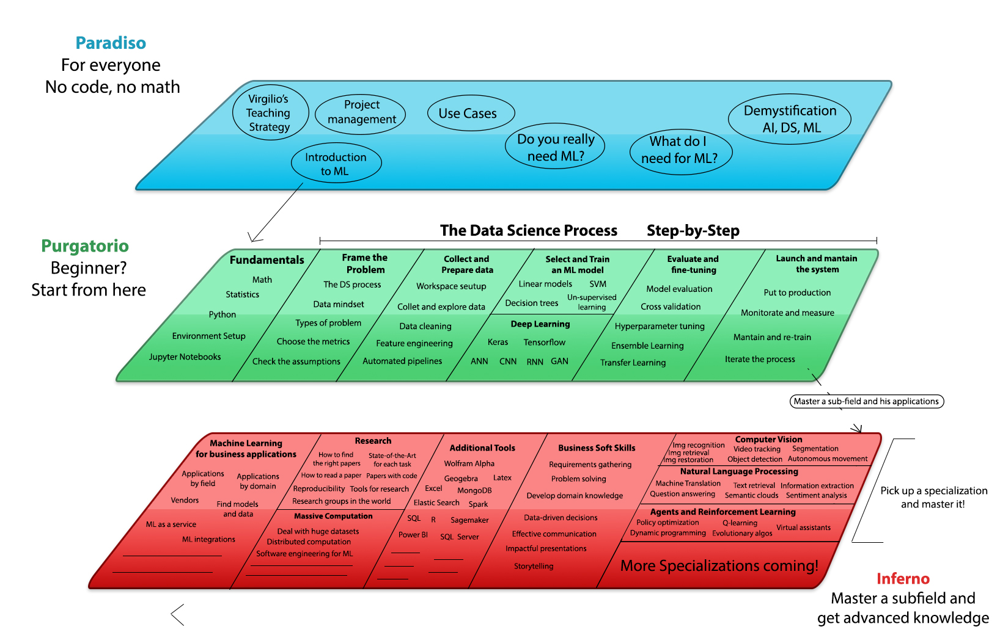

# Virgilio
# Your new Mentor for Data Science E-Learning.
Join our Facebook Group: 
Virgilio is an open source initiative, aiming to mentor and guide anyone in the world of Data Science and Machine Learning. Our vision is to give everyone the chance to get involved in this field, get self-started as a practitioner, gain new cutting edge practical skills and learn to navigate through the infinite web of resources and find the ones useful for you.

# Table of Contents
# What is Virgilio?
Studying and reading through the Internet means swimming in an infinite jungle of chaotic information, even more so in rapidly changing innovative fields.
Have you ever felt overwhelmed when trying to approach Data Science without a real “path” to follow? Are you tired of clicking “Run”, “Run”, “Run”.. on a Jupyter Notebook, with that false sense of confidence given by the comfort zone of the work of others?
Have you ever got confused because of the several and contradicting names for the same algorithm or approach, from different websites and fragmented tutorials?
We will address these critical issues for free, for everyone.
Hi, I'm Virgilio.
Like I did with Dante, just some centuries ago, I'll be your mentor and reference point during your journey through this selva oscura, providing you complete and organic learning paths for several fields, tools, skills and more.
The vision of Virgilio is to give everyone the possibility to get into the incredible world of the Data Science and Machine Learning and the business and creative possibilities that they offer, to get self-started as a practitioner, gain new cutting edge practical skills or just learn to discriminate good information from poor information.
We are doing this by providing only high-quality and coherent content, with clear step-by-step paths and a consistent naming system.
Imagine Virgilio as an E-Mentor who will tell you what do to get the next step, the next skill, or to apply them in practice to create value.
But what does it mean in practice?
In other words, what's the target of the Virgilio project?
There are different scenarios:
- A student from a different field who wants to explore the intersections and the possibilities offered by the Machine Learning and Statistical methods.
- A curious individual who came in touch with one of the buzzwords related to these fields and wants to discriminate between reliable and unreliable information.
- An experienced practitioner who wants to have a reference point for the latest techniques, papers and best practices.
- A manager who wants to understand the possibilities of ML applied to their actual problems, like integration with production systems or new solutions from scratch.
- A businessman who wants to understand if his data are suitable for an ML project, and what could be the real business value.
- A salesman who needs to stay up-to-date with the latest technologies and Jargon.
# Structure
WIP notice: we are in the progress of migrating the content from the old conceptual organisation to the new one. Please be patient while we make Virgilio more awesome!

As you can imagine it’s not easy to intercept all these different needs, so our solution ended up in a hierarchical structure which distinguish the content based on different levels of abstraction.
To do this, we got our inspiration from Dante’s amazing masterpiece “La Divina Commedia”, written in over 20 years of work and published for the first time in 1323 d.c.
Dante’s journey wouldn’t have been possible without his companion and guide, Virgilio, a roman famous poet (70 a.c.) who inspired generations of artists since the Roman hegemony in Europe.
In his journey, Dante travel across the different levels of the catholic conception of the divine world at that time, starting from the Inferno (the prison of the damned), passing through the Purgatorio and reaching eventually the Paradiso (you can call it Valhalla or Nirvana, as you prefer 😃 ).
In your journey, you will start from scratch and eventually reach the theoretical knowledge and solid expendable skill.
The parallelism is natural:

Going from top to bottom increases the level of detail and decreases the level of abstraction.
In the Paradiso you won’t find a single line of code or a math formula, just plain English. Here’s the place for introductions, simple explanations, demystifications, and meta-guides (for example a guide about the best way to use Virgilio). It’s the best place for the not-techies, beginners and literally everyone who wants to get in touch with Data Science and Machine Learning without getting bored into technical details. Do you want to communicate these innovative fields? Pass from the Paradiso!
In the Purgatorio you can find technical guides for beginners (in the field or in general IT). For example, you’ll find guides about Python, maths, and statistics. You will find guides about study techniques, soft skills and you’ll learn how to develop an analytical mindset too. It’s an obliged step before the Hell. Depending on your starting skill, you’ll probably spend here most of the time, learning to code, understand math concepts and more! If you’re a complete beginner, follow the track we proposed, starting from the Fundamentals.
In the Inferno you won’t find gentle introductions or generic explanations, but a lot of different detailed guides, topics, hands-on tutorials and more! You’ll find an entire section dedicated to research and daily updates from the field! You’ll find guides like “how to train a massive neural network over hundreds of GPUs efficiently” or “How to deal with huge datasets”, or “how to fine-tune a preprocessing pipeline”. Think about Inferno as the place where you will pick up the sub-field you prefer and dive into that. It’s impossible to learn everything at once! One of the Virgilio’s most important learning strategies is “One enemy at time”, "Divide and conquer!". The three specializations that we provide are Computer Vision, Natural Language Processing, and Agent-based and Reinforcement Learning. These learning paths are the “final bosses” of the Virgilio’s experience: once you’ll have completed them you will hopefully be skilled enough to land an internship or tackle real business problems!
Above these you’ll find a plenty of other useful zones:
- Business Skills: these are necessary to unlock the business value in the real world, and they are probably the most valuable asset for a “data guy” to have in his pocket.
- Tools: here you find guides about useful tools for programming, or scientific computing in general.
- Research: here you will learn how to find the right papers and digest them. In addition, you’ll discover which teams to follow for your interests.
- Massive computation: here you’ll find hints and resources for computing on clusters, optimize your system and other advanced topics.
- ML for Business applications: here we provide additional resources to select a sector and see what are the today’s available techniques for the problems of your interest.
# Paradiso
- Demystification of the key concepts of Artificial Intelligence and Machine Learning
- What do you need for ML?
- Do you really need ML?
- ML use cases
- Virgilio's Teaching Strategy - Learning to Learn
- Introduction to ML
# Purgatorio
- Fundamentals
- Define The Scope and Ask Questions
- Collect and Prepare Data
- Select and Train Machine Learning Models
- Launch and Mantain the System
- Serving Trained Models
- Monitoring Usage and Behavior
- Automation and Reproducibility
- Now Go Build
- A Messy Real World
- Transfer Learning
- Best Practices
# Inferno
- Computer Vision
- Natural Language Processing
- Virtual Assistants
- Reinforcement Learning
- Soft Skills
- Tools
- Research
- Massive Computation
- Machine Learning for Business Applications
# Complete Learning Paths
# About
Virgilio is developed and mantained by these awesome people.
You can email us virgilio.datascience (at) gmail.com or join the Discord chat.
# Contribute
That's awesome! Check the contribution guidelines and get involved in our project!
# License
The project is licensed under the GPLv3 terms.